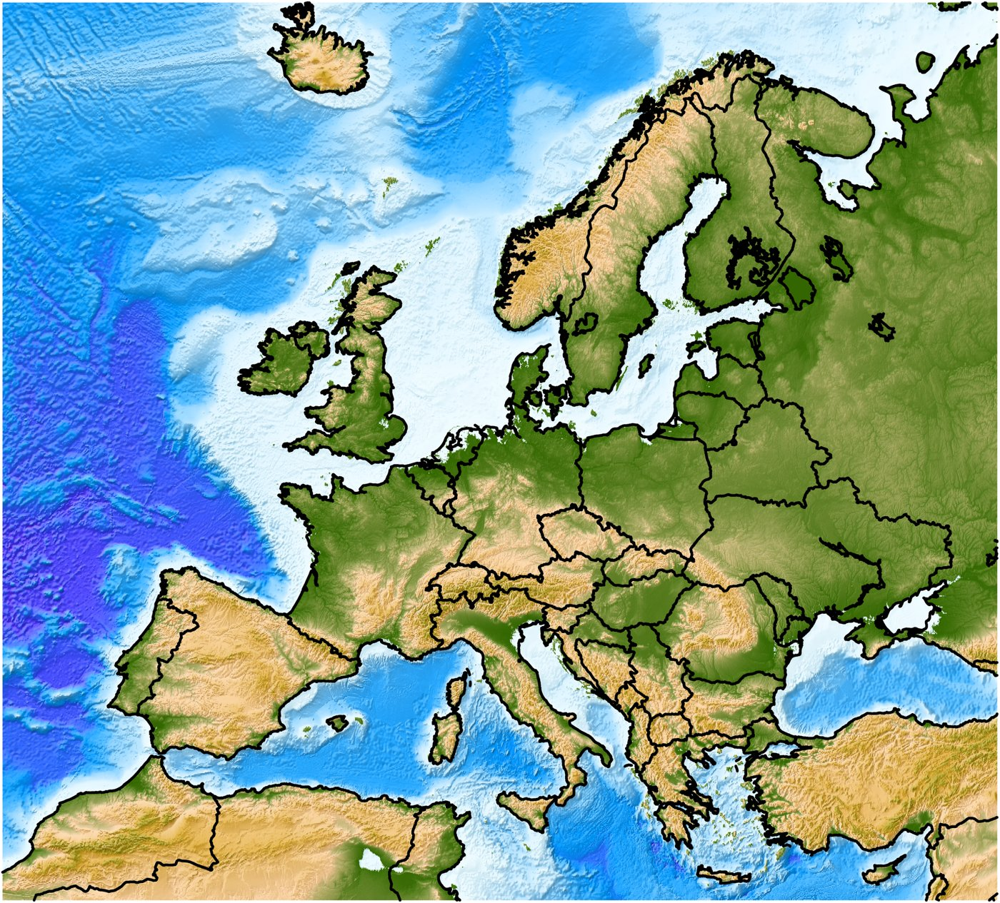

Geografia · 7. ročník ZŠ · Vlastný materiál autora. Schémy sú zjednodušené a slúžia na orientáciu, nie sú to presné mapy.
členitosť pobrežia · povrch · podnebie · vodstvo · typy krajín
Čo sa naučíš Zistíš, aké je pobrežie Európy, aké má nížiny a pohoria a prečo je na západe podnebie mierne, kým na východe extrémnejšie. Spoznáš európske rieky a jazerá a typy krajín od tundry až po stredomorskú krajinu.
🧭 0. Poloha Európy (základ)
Najprv zistíme, kde Európa leží a čo ju ohraničuje.
Európa tvorí s Áziou jeden veľký kontinent – Eurázia. Ako samostatný svetadiel sa vymedzuje z historických a kultúrnych dôvodov.
Leží takmer celá na severnej polguli, väčšinou v mierne teplom pásme.
Rozlohou (cca 10 mil. km²) je jedným z menších svetadielov.
Hranice Európy
Strana
Hranica
sever
Severný ľadový oceán
západ
Atlantický oceán
juh
Stredozemné more (+ Gibraltársky prieliv, Bospor a Dardanely, Čierne more)
východ
pohorie Ural, rieka Ural, Kaspické more a Kaukaz
Krajné body pevniny
Smer
Bod
sever
Nordkinn (Nórsko)
juh
Tarifa (Španielsko)
západ
Cabo da Roca (Portugalsko)
Schéma polohy Európy (zjednodušená, len ako orientácia, nie je v mierke).

Reliéfna mapa Európy so štátnymi hranicami. Autor: PieceOfEarth, vlastná práca, licencia CC BY-SA 4.0 (pozri Zdroje obrázkov).
Zapamätaj si
Európa a Ázia tvoria spolu kontinent Eurázia.
Hranice: sever – Severný ľadový oceán, západ – Atlantický oceán, juh – Stredozemné more, východ – Ural, rieka Ural, Kaspické more a Kaukaz.
Krajné body pevniny: Nordkinn (sever), Tarifa (juh), Cabo da Roca (západ).
🌊 1. Členitosť pobrežia
Európa má najčlenitejšie pobrežie zo všetkých svetadielov – veľa polostrovov (časť pevniny obklopená morom z troch strán), ostrovov, zálivov (more zasahuje do pevniny) a prielivov (úzky morský pás medzi dvoma pevninami alebo pevninou a ostrovom).
Prečo na tom záleží: more je takmer všade blízko, a preto má veľký vplyv na podnebie, dopravu aj osídlenie.
Polostrovy
Polostrov
Poznámka
Škandinávsky
Nórsko, Švédsko
Kolský
Rusko
Jutský
Dánsko
Pyrenejský
Španielsko, Portugalsko
Apeninský
Taliansko, tvar „čižmy“
Balkánsky
Grécko, Bulharsko, Srbsko…
Krym
Čierne more
Ostrovy
Britské ostrovy – Veľká Británia (najväčší európsky ostrov) a Írsko.
Island – sopečný ostrov v Atlantiku.
V Stredozemnom mori: Sicília, Sardínia, Korzika, Kréta, Malta, Cyprus, Baleáry.
Oceány, moria, zálivy a prielivy
Typ vodnej plochy
Príklady
Oceány
Atlantický (západ), Severný ľadový (sever)
Moria
Severné, Baltské, Biele, Barentsovo; Stredozemné (s Jadranským, Iónskym, Egejským a Tyrrhénskym morom); Čierne, Azovské, Kaspické
Bospor a Dardanely: medzi Čiernym a Egejským morom leží aj Marmarské more. Bospor spája Čierne a Marmarské more, Dardanely spájajú Marmarské a Egejské more.
Typy pobrežia
Typ
Znaky
Kde
Fjordové
úzke, hlboké zálivy vyhĺbené ľadovcami
Nórsko, Island
Dalmatínske
pobrežie s množstvom ostrovov rovnobežných s pevninou
Chorvátsko
Nížinné, rovinaté
piesočné pláže, duny, lagúny
Severné a Baltské more, Benátky
Deltové
ústia riek do mora
Dunaj do Čierneho mora, Pád do Jadranu
Typy pobrežia (zjednodušená schéma zhora: modrá = voda, hnedá a zelená = pevnina).
Zapamätaj si
Najčlenitejší svetadiel.
Najväčšie polostrovy: Škandinávsky a Pyrenejský, Apeninský, Balkánsky.
Európa je svetadiel s najnižšou priemernou nadmorskou výškou (okolo 300 m). Nížiny zaberajú viac ako polovicu územia, na juhu a v strednej časti sú pohoria.
Nížiny
Nížina
Poloha / poznámka
Východoeurópska
Najväčšia nížina Európy (Rusko, Ukrajina, Bielorusko, Pobaltie)
Severonemecká a Poľská
Pozdĺž Severného a Baltského mora, vznikla činnosťou ľadovca
Panónska panva
Maďarsko, juh Slovenska, Srbsko; Podunajská a Východoslovenská nížina sú jej severným okrajom
Zvrásnenie je vznik pohoria stláčaním zemskej kôry. Zvetrávanie a erózia pohoria časom zníži a zaoblí, preto sú staré pohoria nižšie.
Staré a mladé pohoria – porovnanie profilu (nie je v mierke).
Najdôležitejšie pohoria a vrchy
Alpy – najvyššie pohorie Európy. Zasahujú do 8 štátov: Francúzsko, Taliansko, Švajčiarsko, Rakúsko, Nemecko, Slovinsko, Lichtenštajnsko a Monako. Ich najvyšší vrch Mont Blanc (asi 4 806 – 4 810 m) leží na hranici Francúzska a Talianska.
Karpaty – oblúk cez Slovensko, Česko, Poľsko, Ukrajinu, Rumunsko, Rakúsko, Maďarsko a Srbsko. Patria sem aj Vysoké Tatry (Gerlachovský štít 2 655 m). Južné Karpaty sa volajú aj Transylvánske Alpy.
Kaukaz – Elbrus (5 642 m) je vyšší ako Mont Blanc, no leží na hranici Európy a Ázie, preto sa ako najvyšší vrch Európy uvádza rôzne.
Sopky – Etna (Sicília, cca 3 300 m), Vezuv a Stromboli (Taliansko), Hekla (Island). Sopečná a zemetrasná činnosť je najčastejšia v Stredozemí a na Islande.
Zaľadnenie – ľadovce sú v Alpách, na Škandinávskom polostrove a na Islande (Vatnajökull). Pevninský ľadovec v štvrtohorách vytvoril nížiny a jazerá na severe a fjordy.
🗺️ Nížiny a pohoria nájdeš na reliéfnej mape Európy v kapitole 0 (zelená = nížiny, hnedá a žltohnedá = vyššie územia a pohoria). Hľadaj na nej Alpy, Karpaty, Pyreneje, Apeniny, Škandinávske vrchy a Východoeurópsku nížinu.
Zapamätaj si
Najväčšia nížina: Východoeurópska.
Najvyššie pohorie: Alpy, najvyšší vrch Alp: Mont Blanc (asi 4 806 – 4 810 m).
Karpaty → patria sem Vysoké Tatry.
Činné sopky: Etna, Vezuv, Island.
🌦️ 3. Podnebie Európy
Väčšina Európy leží v miernom podnebnom pásme. Na severe zasahuje subarktické a arktické pásmo (za severným polárnym kruhom), na juhu subtropické pásmo so stredomorským podnebím.
Čo ovplyvňuje podnebie
Činiteľ
Ako pôsobí
Zemepisná šírka
Čím ďalej na sever, tým chladnejšie.
Blízkosť mora a Golfský prúd
Golfský prúd je teplý morský prúd. Spolu s prevládajúcim západným prúdením vlhkého vzduchu zmierňuje zimy na západe a severozápade (aj pri nórskom pobreží).
Kontinentalita
Vzdialenosť od oceánu: rastie smerom na východ a juh od severozápadného pobrežia. Znamená väčšie rozdiely medzi letom a zimou a menej zrážok.
Nadmorská výška a pohoria
Na návetrných svahoch (Škandinávske vrchy, Alpy) je veľa zrážok. Za pohoriami je zrážkový tieň.
Podnebie od západu na východ (schéma, nie je v mierke): vplyv oceánu slabne, kontinentalita rastie.
Podnebné oblasti Európy
Podnebie
Kde
Znaky
Arktické a subarktické
Sever Škandinávie, Rusko, Island, Svalbard
Dlhá chladná zima, krátke chladné leto, málo zrážok, večná zmrzlina
Oceánske (prímorské)
Britské ostrovy, Francúzsko, Benelux, pobrežie Nórska
Mierne zimy, chladnejšie leto, malé teplotné rozdiely, zrážky celoročne
Prechodné (stredná Európa)
Nemecko, Poľsko, Česko, Slovensko, Maďarsko
Štyri ročné obdobia, teplé leto, studená zima, stredné zrážky
Kontinentálne
Východná Európa (Rusko, Ukrajina)
Veľmi studená zima, horúce leto, málo zrážok
Stredomorské (subtropické)
Pobrežie Stredozemného mora (Španielsko, Taliansko, Grécko, Chorvátsko)
Horúce suché leto, mierna vlhká zima, veľa slnečných dní
Horské
Alpy, Karpaty, Pyreneje, Kaukaz
S výškou ubúda teplota a pribúdajú zrážky; sneh, ľadovce
Prečo je západ mierny a východ extrémnejší? Na západe zmierňuje zimy teplý Golfský prúd a vlhký vzduch, ktorý prúdi z oceánu. Smerom na východ je oceán ďalej, kontinentalita rastie a rozdiely medzi letom a zimou sú väčšie.
Príčina rozdielov: vzdialenosť od oceánu, Golfský prúd, šírka a výška.
💧 4. Vodstvo Európy
Najprv si vysvetlíme tri základné pojmy.
Povodie = územie, z ktorého rieka a jej prítoky zbierajú vodu.
Rozvodie = hranica medzi povodiami (často hrebeň pohoria).
Úmorie = územie, z ktorého rieky tečú do rovnakého mora alebo oceánu.
Povodie = územie, z ktorého rieka zbiera vodu. Rozvodie = hranica medzi povodiami. Úmorie = všetky povodia, ktoré ústia do toho istého mora (tu sú dve úmoria: more A a more B).
Hlavné úmoria
Úmorie
Typické rieky
Severný ľadový oceán
Severná Dvina, Pečora
Atlantický oceán (vrátane Severného a Baltského mora)
Rýn, Labe, Odra, Visla, Temža, Seina, Loira, Tajo
Stredozemné more
Rhôna, Ebro, Pád, Tiber
Čierne more
Dunaj, Dneper, Dnester (Don cez Azovské more)
Kaspické more (bezodtokové, teda more bez odtoku)
Volga, Ural
Najdôležitejšie rieky
Rieka
Dĺžka
Čo vedieť
Volga
cca 3 530 km
Najdlhšia rieka Európy, celá v Rusku, ústi do Kaspického mora. Zdroj: Valdajská vrchovina.
Dunaj
cca 2 850 km
Druhá najdlhšia; najdlhšia v EÚ. Prameň: Čierny les (Nemecko), ústi deltou do Čierneho mora. Preteká 10 štátmi a 4 hlavnými mestami (Viedeň, Bratislava, Budapešť, Belehrad).
Rýn
cca 1 230 km
Z Álp (Švajčiarsko) cez Nemecko a Holandsko do Severného mora; veľmi dôležitá vodná cesta. Kanál Rýn–Mohan–Dunaj spája Severné a Čierne more.
Labe, Odra, Visla
cca 1 090 / 850 / 1 050 km
Rieky strednej Európy; Labe a Odra majú prameň v Česku, vlievajú sa do Severného, resp. Baltského mora.
Dĺžky riek (zaokrúhlené hodnoty, pozri Poznámku k údajom). Volga je najdlhšia rieka Európy.
Jazerá a ľadovce
Ľadovcového pôvodu: severná Európa – Fínsko, „krajina tisícich jazier“; Švédsko (Vänern), Rusko (Ladožské jazero – najväčšie jazero Európy, Onežské).
Alpské jazerá: Ženevské, Bodamské, Lago Maggiore, Garda.
Balaton – najväčšie jazero strednej Európy.
Kaspické more je najväčšie jazero na Zemi (slané, bez odtoku).
Typ krajiny (prírodné zóny) závisí hlavne od podnebia. Mení sa zo severu na juh, v horách zasa s nadmorskou výškou. Každému typu zodpovedá určitá vegetácia, pôda a živočíchy.
Ukrajina, juh Ruska (Východoeurópska nížina), aj Panónia
Trávy, málo stromov; úrodné černozeme (obilie, slnečnica)
Sysle, škrečky, dropy
Polopúšť
Pri Kaspickom mori
Suchomilné trávy a kríky, slané pôdy
Hlodavce, plazy
Stredomorská krajina
Pobrežie Stredozemného mora
Tvrdolisté stromy a kry (olivovník, cyprus, korkový dub), vinič, citrusy
Jašterice, vtáky, ovce, kozy
Vysokohorská krajina
Alpy, Karpaty, Pyreneje, Kaukaz
Výškové stupne: listnatý les → ihličnatý → kosodrevina → hole → sneh a ľad
Kamzík, svišť, kozorožec, orol skalný
Typy krajín sa striedajú zo severu na juh aj podľa nadmorskej výšky (schéma, nie je v mierke).
Kultúrna krajina – väčšinu Európy dnes formuje človek (polia, mestá, priemysel). Pôvodné lesy sú zachované len na malých plochách.
Zapamätaj si
Sever → juh: tundra → tajga → listnaté a zmiešané lesy → lesostep a step → polopúšť / stredomorská krajina.
V horách sa typy krajín striedajú aj podľa výšky (výškové stupne).
📝 6. Rýchle opakovanie
Odpovede nájdeš v samostatnej časti na konci materiálu.
Ktorý oceán obmýva Európu na západe a ktorý na severe?
Vymenuj štyri európske polostrovy a najväčší európsky ostrov.
Ako sa volá najväčšia nížina Európy a najvyššie pohorie?
Prečo je v Británii miernejšie počasie ako v Rusku v rovnakej zemepisnej šírke?
Ktorá rieka je najdlhšia a do ktorého mora ústi? Cez koľko štátov preteká Dunaj?
Priraď typ krajiny: Fínsko, Ukrajina, Grécko, Alpy v nadmorskej výške 3 000 m.
Doplň: Najčlenitejšie pobrežie zo všetkých svetadielov má ________ . Úzke, hlboké zálivy vyhĺbené ľadovcami sa volajú ________ .
Priraď prieliv k tomu, čo spája: Lamanšský · Gibraltársky · Mesinský · Bospor a Dardanely ↔ Atlantik a Stredozemné more · Sicíliu a Taliansko · Francúzsko a Britániu · Čierne, Marmarské a Egejské more.
Priraď každé pohorie k typu (staré / mladé): Škandinávske vrchy · Alpy · Ural · Karpaty · Česká vysočina · Pyreneje · Harz · Kaukaz.
Doplň podnebie od západu na východ a na juhu: západ ________ → stred ________ → východ ________ ; juh ________ .
Vysvetli, čo je povodie, rozvodie a úmorie.
Pravda alebo nepravda? (a) Mont Blanc leží na hranici Francúzska a Talianska. (b) Rýn ústi do Čierneho mora. (c) Kaspické more je bezodtokové. (d) Ladožské jazero je najväčšie jazero Európy.
Vymenuj typy krajín v poradí zo severu na juh a pri každom uveď jeden príklad rastliny alebo živočícha z tabuľky.
Slovníček pojmov
Pojem
Vysvetlenie
Eurázia
veľký kontinent, ktorý tvorí Európa spolu s Áziou
polostrov
časť pevniny, ktorú z troch strán obklopuje more (napr. Pyrenejský)
záliv
časť mora, ktorá zasahuje do pevniny (napr. Biskajský)
prieliv
úzky morský pás medzi dvoma pevninami alebo pevninou a ostrovom (napr. Lamanšský)
pobrežie s množstvom ostrovov rovnobežných s pevninou (Chorvátsko)
delta
rozvetvené ústie rieky do mora (Dunaj, Pád)
nížina
nízka rovinatá krajina; v Európe zaberá viac ako polovicu územia
panva
nížina obklopená vyššími územiami (napr. Panónska panva)
zvrásnenie
vznik pohoria stláčaním zemskej kôry; podľa veku staršie (staré pohoria) a alpínske (mladé pohoria)
zaľadnenie
pokrytie územia ľadovcami; pevninský ľadovec v štvrtohorách vytvoril nížiny, jazerá a fjordy
kontinentalita
vzdialenosť od oceánu; čím väčšia, tým väčšie rozdiely medzi letom a zimou a menej zrážok
Golfský prúd
teplý morský prúd, ktorý zmierňuje zimy na západe a severozápade Európy
zrážkový tieň
oblasť za pohorím, kde je zrážok málo (na návetrných svahoch ich je veľa)
povodie
územie, z ktorého rieka a jej prítoky zbierajú vodu
rozvodie
hranica medzi povodiami, často hrebeň pohoria
úmorie
územie, z ktorého rieky tečú do rovnakého mora alebo oceánu
bezodtoké more
more bez odtoku (Kaspické more je slané a nemá odtok)
tundra
typ krajiny na severe: machy, lišajníky, zakrpatené kríky, zamrznutá pôda
tajga
ihličnatý les na severe (smrek, borovica, smrekovec)
lesostep
prechod medzi lesom a stepou; trávy a málo stromov, úrodné černozeme
kultúrna krajina
krajina, ktorú formuje človek (polia, mestá, priemysel)
výškové stupne
striedanie typov krajiny v horách podľa nadmorskej výšky: listnatý les → ihličnatý → kosodrevina → hole → sneh a ľad
Poznámka k údajom
Údaje o dĺžkach riek a výškach sa v rôznych zdrojoch mierne líšia (napr. Volga 3 530 – 3 692 km); sú uvedené zaokrúhlené hodnoty. Ostatný obsah zodpovedá bežným učebniciam geografie pre 7. ročník; ak sa vaša učebnica odlišuje, riaďte sa ňou.
Zdroje obrázkov
Reliéfna mapa Európy (kapitola 0): PieceOfEarth, vlastná práca. Licencia CC BY-SA 4.0. Obrázok bol zmenšený a uložený ako JPG, inak nebol upravený.
Ostatné schémy a grafy sú vlastné kresby (inline SVG).
Odpovede (pre rodiča alebo učiteľa)
Na západe Atlantický oceán, na severe Severný ľadový oceán.
Napr. Škandinávsky, Pyrenejský, Apeninský, Balkánsky (alebo Kolský, Jutský, Krym). Najväčší ostrov: Veľká Británia.
Východoeurópska nížina; Alpy.
Britániu zmierňuje teplý Golfský prúd a západné prúdenie vlhkého vzduchu z oceánu, má blízko k oceánu (oceánske podnebie). Rusko je ďaleko od oceánu, má väčšiu kontinentalitu (veľmi studená zima, horúce leto, málo zrážok).
Najdlhšia je Volga, ústi do Kaspického mora. Dunaj preteká 10 štátmi.
Fínsko – tajga; Ukrajina – lesostep a step; Grécko – stredomorská krajina; Alpy v 3 000 m – vysokohorská krajina (oblasť sneh a ľad).
Európa; fjordy.
Lamanšský – Francúzsko a Británia; Gibraltársky – Atlantik a Stredozemné more; Mesinský – Sicília a Taliansko; Bospor a Dardanely – Čierne, Marmarské a Egejské more (Bospor spája Čierne a Marmarské, Dardanely Marmarské a Egejské more).
Povodie = územie, z ktorého rieka a jej prítoky zbierajú vodu. Rozvodie = hranica medzi povodiami (často hrebeň pohoria). Úmorie = územie, z ktorého rieky tečú do rovnakého mora alebo oceánu.
(a) pravda, (b) nepravda (Rýn ústi do Severného mora), (c) pravda, (d) pravda.
Tundra (sob, lišajníky…) → tajga (smrek, los…) → listnaté a zmiešané lesy (dub, jeleň…) → lesostep a step (trávy, sysle…) → polopúšť (hlodavce…) / stredomorská krajina (olivovník, jašterice…). Príklady môžu byť ľubovoľné z tabuľky.